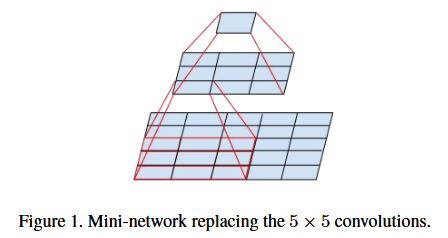
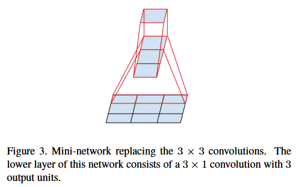
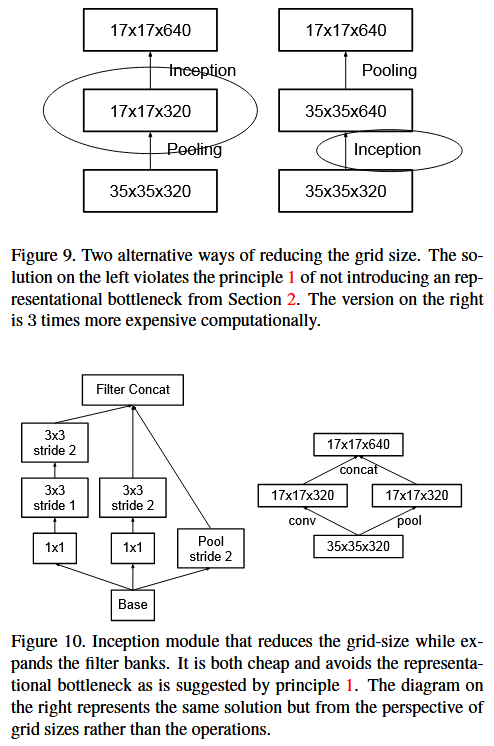

论文笔记 - Rethinking the Inception Architecture for Computer Vision
1. Information
Title: Rethinking the Inception Architecture for Computer Vision Link: Inception V3 Paper Source: IEEE Conference on Computer Vision and Pattern Recognition (CVPR) Date: 2016
2. Summary
本文重新审视了 Inception V1 架构并提出了一系列改进，提升了其效率和性能，从而推出了 Inception V3 模型。这些改进包括优化计算成本、减少参数数量，以及在保持高效表示的同时增加网络的深度和宽度。在 ImageNet 数据集上，这些模型在减少计算预算的同时实现了最先进的性能。
3. Background
Inception 网络是一类在每层内通过多尺度特征提取实现计算效率与性能平衡的架构。最初的 GoogLeNet（Inception V1） 引入了模块化设计，但也带来了参数数量增多和计算开销增加的问题。本研究在 Inception V1 的成功基础上，提出了解决这些局限性的方法，并进一步提升了视觉任务中的准确率和效率。
4. Research Objective
- 减少网络计算成本和参数数量。
- 平衡网络深度与宽度以实现最优性能。
- 探索新的技术，例如卷积因式分解和辅助损失层。
5. Method
卷积因式分解
用多个较小的卷积（如 3×3 或 1×1 ）替代较大的卷积（如 5×5 ），以降低计算成本。

将较大的卷积核（5×5）分解为两个小卷积核（如 1×5 和 5×1 ），降低参数量和计算复杂度。

高效网格尺寸缩减
如图 9 所示，左侧方法虽然降低了特征图尺寸，但容易引发表征瓶颈；右侧方法虽能缓解表征瓶颈，却带来了较高的计算开销。而图 10 中的方法在避免表征瓶颈的基础上，成功实现了计算开销的显著降低。

辅助分类器
早期的 GoogLeNet 使用辅助分类器主要是为了缓解梯度消失问题。但 Inception V3 中研究了它的正则化效果，发现即使在没有梯度消失问题的情况下，辅助分类器仍然能提高网络的泛化能力。
Label Smoothing技术
在传统的分类任务中，目标函数通常使用交叉熵损失（Cross-Entropy Loss），其中真实类别的标签被表示为 one-hot 编码（即目标类别为 1，其他类别为 0）。这种方式在训练时可能导致模型对目标类别的预测概率非常接近 1，而对其他类别接近 0，从而导致过拟合问题。Label Smoothing 是一种通过调整目标分布的方法，避免模型过度自信。它将原始的 one-hot 分布替换为一个“平滑”的分布，即目标类别的标签值被减小，而非目标类别的标签值被稍微增加： \[ q^{\prime}(k)= \begin{cases}1-\epsilon+\frac{\epsilon}{K}, & \text { if } k=y \\ \frac{\epsilon}{K}, & \text { if } k \neq y\end{cases} \]
- \(q^{\prime}(k)\)：经过平滑后的标签分布。
- \(\epsilon\)：平滑因子，通常是一个较小的正值，例如 0.1。
- \(K\)：类别总数。
- \(y\)：真实类别索引。
这样，目标分布会从严格的 one-hot 变成一个软分布。
6. Evaluation
模型在ImageNet数据集上进行评估，这是大规模图像分类的基准。
- 评估指标：Top-1 和 Top-5 分类准确率。
- 结果：Inception V3 在与前代架构相比时显著提升了准确率，同时降低了计算成本。
- 实验验证：提出的技术（如卷积因式分解和批量归一化）对性能提升起到了关键作用。
7. Conclusion
本文成功提出了一种改进的 Inception 架构，在计算效率和性能之间实现了平衡。因式分解卷积和改进的训练策略等创新，为设计高效的深度学习架构设立了新的标准。这些发现对构建可扩展、高效的深度学习模型具有广泛意义。
8. Notes
- 虽然 Inception V2 和 Inception V3 都是在同一篇论文 "Rethinking the Inception Architecture for Computer Vision" 中提及，但出于对 Batch Normalization 的强调，很多人习惯性地将 BN-Inception 称为 Inception V2。